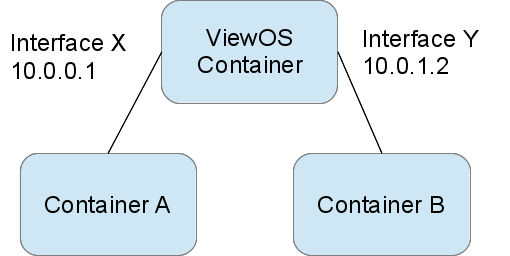
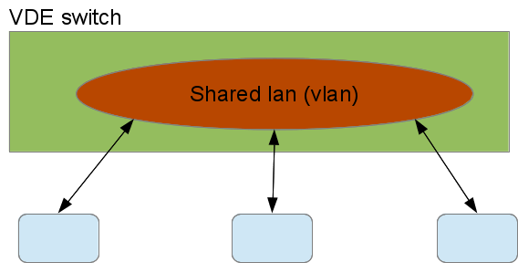
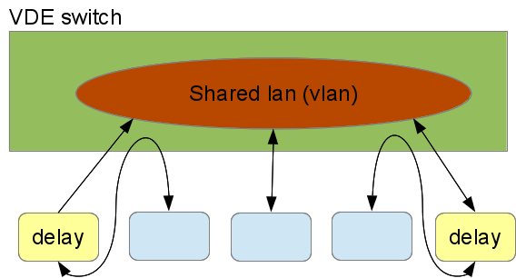

Containers Reference
This document describes the details of the commands and data structures that make up the Containers system. The Containers Guide provides useful context about the workflows and goals of the system that inform these technical details.
Commands
This section describes the command line interface to the Containers system.
containerize.py
The containerize.py command creates a DETERLab experiment made up of containers. The containerize.py program is available from /share/containers/containerize.py on users.deterlab.net. A sample invocation is:
$ /share/containers/containerize.py MyProject MyExperiment ~/mytopology.tcl
It will create a new experiment in MyProject called MyExperiment containing the experiment topology in mytopology.tcl. All the topology creation commands supported by DETERLab are supported by the Containers system, but DETERLab program agents are not. DETERLab start commands are supported.
Containers will create an experiment in a group if the project parameter is of the form project/group. To start an experiment in the testing group of the DETER project, the first parameter is specified as DETER/testing.
Containers supports ns2 file or topdl descriptions. Ns2 descriptions must end with .tcl or .ns. Other files are assumed to be topdl descriptions.
Names of substrates and nodes in ns2 files are restricted to valid tcl variable names. Names of substrates and nodes in topdl files are restricted to the characters A-Z, a-z, digits, the underscore and the hyphen (-).
By default, containerize.py program will partition the topology into openvz containers, packing 10 containers per physical computer. If the topology is already partitioned - meaning at least one element has a containers::partition attribute - containerize.py will not partition it. The --force-partition flag causes containerize.py to partition the experiment regardless of the presence of containers:partition attributes.
If container types have been assigned to nodes using the containers:node_type attribute, containerize.py will respect them. Valid container types for the containers:node_type attribute or the --default-container parameter are:
| Parameter | Container |
|---|---|
embedded_pnode |
Physical Node |
qemu |
Qemu VM |
openvz |
Openvz Container |
process |
ViewOS process |
The containerize.py command takes several parameters that can change its behavior:
-
--default-container=kindContainerize nodes without a container type into kind. If no nodes have been assigned containers, this puts all them into kind containers.
-
--force-partitionPartition the experiment whether or not it has been partitioned already
-
--packing=intAttempt to put int containers into each physical node. The default
--packingis 10. -
--size=intAttempt to divide the experiment into int physical nodes. The default is to use packing. There are some nuances to this with mixed containers. See the Containers Guide for more details.
-
--config=filenameRead configuration variables from filename. Configuration values are discussed below.
-
--pnode-types=type1[,type2...]Override the site configuration and request nodes of type1 (or type2 etc.) as host nodes.
-
--end-node-shapingAttempt to do end node traffic shaping even in containers connected by VDE switches. This works with qemu nodes, but not process nodes. Topologies that include both openvz nodes and qemu nodes that shape traffic should use this. See the discussion below.
-
--vde-switch-shapingDo traffic shaping in VDE switches. Probably the default, but that is controlled in the site configuration. See the discussion below.
-
--openvz-diskspaceSet the default openvz disk space size. The suffixes G and M stand for 'gigabytes' and 'megabytes'.
-
--openvz-templateSet the default openvz template. Templates are described in the Containers Guide.
-
--openvz-template-dirAdd a directory to be searched for openvz templates. Templates must end in
tar.gzand be accessible to the user at creation and swap time. They can only be located under the/projor/sharedirectories. -
--imageConstruct a visualization of the virtual topology and leave it in the experiment directories (default).
-
--nodes-onlyIgnore network constraints when partitioning nodes.
-
--no-imageDo not construct a visualization of the virtual topology.
-
--pass-pack=pass:packing[,pass:packing...]Specify the packing factor for each partitioning pass. The [ContainersGuide#MoreSophisticatedPacking:MultiplePasses Containers Guide] describes this in detail.
-
--pass-size=pass:size[,pass:size...]Specify the number of physical machines to use for each partitioning pass. The Containers Guide describes this in detail.
-
--pass-pnodes=pass:type[,type...][;pass:type[,type...]...]Specify the pnode types on which nodes packed in partitioning pass pass can be placed. The Containers Guide describes this in detail.
-
--pass-nodes-only=pass[,pass...]Specify the partitioning passes on which network connectivity is ignored. The Containers Guide describes this in detail.
-
--prefer-qemu-users=user[,user...]Make sure that Qemu images mount the given users' home directories. Qemu nodes can mount at most 19 users' home directories and this ensures that the experimenters using the containers can reach their home directories.
-
--debugPrint additional diagnostics and leave failed DETER experiments on the testbed.
-
--keep-tmpDo not remove temporary files - used for debugging only.
This invocation:
$ ./containerize.py --packing 25 --default-container=qemu --force-partition DeterTest faber-packem ~/experiment.xml
takes the topology in ~/experiment.xml (which must be a topdl description), packs it into 25 qemu containers per physical node, and creates an experiment called 'DeterTest/faber-packem' that can be swapped-in. If experiment.xml is already partitioned, it will be re-partitioned. If some nodes in that topology are assigned to openvz nodes already, those nodes will be still be in openvz containers.
The result of a successful containerize.py run is a DETERLab experiment that can be swapped in.
More detailed examples are available in the Containers Guide.
container_image.py
The container_image.py command draws a picture of the topology of an experiment. This is helpful in keeping track of how virtual nodes are connected. containerize.py calls this internally and stores the output in the per-experiment directory (unless --no-image is used).
A researcher may call container_image.py directly to generate an image later or to generate one with the partitioning drawn.
The simplest way to call container_image.py is:
/share/containers/container_image.py topology.xml output.png
The first parameter is a topdl description, for example the one in the per-experiment directory. The second parameter is the output file for the image. When drawing an experiment that has been containerized, the --experiment option is very useful.
Options include:
-
--experiment=project/experimentDraw the experiment in project/experiment, if it exists. Note that this is just the DETERLab experiment and project names. Omit any sub-group.
-
--topo=filenameDraw the topology in the filename indicated.
-
--attr-prefix=prefixPrefix for containers attributes. Deprecated.
-
--partitionsDraw labeled boxes around nodes that share a physical node.
-
--out=filenameSave the image in the filename indicated.
-
--program=programname Use programname to lay out the graph. programname must take a file in graphviz's dot language. This is given as the--programoption to fedd_image.py internally. The default isfdpwhich works well when--partitionsis given.
If neither --topo nor --experiment is given, the first positional parameter is the topdl topology to draw. If --out is not given the next positional parameter (the first if neither --topo nor --experiment is given) is the output file.
A common invocation looks like:
/share/containers/container_image.py --experiment SAFER/testbed-containers ~/drawing.png
Topdl Attributes For Containers
Several topdl attributes influence how an experiment is containerized. These can be added to nodes using the ns2 tb-add-node-attribute command (used throughout the Containers Guide) or directly to the topdl.
These attributes are all attached to nodes/Computers:
-
containers:node_typeThe container that will hold this node. The full list is available here.
-
containers:partitionAn identifier grouping nodes together in containers that will share a physical node. Generally assigned by containerize.py, but researchers can also directly assign them. The
containerize.pycommand assigns integers, so if a researcher assigns other partition identifiers,containerize.pywill not overwrite them. -
containers:openvz_templateThe flavor of Linux distribution to emulate on openvz. There is a list of valid choices in the Containers Guide.
-
containers:openvz_diskspace
Amount of disk space to allocate to an openvz container. Be sure to include the G (gigabyte) or M (megabyte) suffix or the size will be taken as disk blocks.
containers:ghost
If this attribute is true, resources will be allocated for this node, but it will not be started when the topology is created.
-
containers:maverick_urlA location to download the QEMU image for this container. The name is a legacy that will disappear. This is deprecated.
There are a few other attributes that are meaningful to more applications. Users specifying ns2 files will not need to set these directly, as the DETERLab ns2 interpreter does so.
On Computers:
-
startupThe start command.
tb-set-node-startcmdsets this.
On interfaces:
-
ip4_addressThe IPv4 address of this interface. Set by the ns2 commands for fixing addresses.
-
ip4_netmaskThe IPv4 netmask. ns2 sets this.
Configuration Files
These files control the operation of the containers system.
Per-experiment Directory
When an experiment is containerized, the data necessary to create it is stored in /proj/project/exp/experiment/containers. The path /proj/project/exp/experiment is created by DETERLab when the experiment is created, and used by experimenters for a variety of things. This directory is replicated on nodes under /var/containers/config.
There are a few files in the per-experiment directory that most experimenters can use:
-
experiment.tclIf the topology was passed to containerize.py as an ns file, this is a copy of that input file. Useful for seeing what the experimenter asked for, or as a basis for new experiments.
-
experiment.xmlThe analog of
experiment.tcl, this is the topology given as topdl. The topdl input file. -
visualization.pngA drawing of the virtual topology in png format. Generated by container_image.py
-
hostsThe host to IP mapping that will be installed on each node as
/etc/hosts. -
site.confA clone of the site configuration file that holds the global variables that the container creation will use. Values overridden on the command line invocation of containerize.py will be present in this file.
The rest of this directory is primarily of interest to developers. It includes:
-
annotated.xmlFirst version of the input topology after default container types have been added. Input to the partitioning step.
-
assignmentA yaml representation of the partition to virtual node mapping.
-
backend_config.yaml
The server and channel to use for grandstand communication. Encoded in YAML.
-
childrenDirectory containing the assignment, including all the levels of nested hypervisors.
-
config.tgzThe contents of the per-experiment directory (except
config.tgz) for distribution into the experiment. -
embedding.yamlA yaml-encoded representation of the children sub-directory
-
ghostsContainers that are initially not started in the experiment.
-
maverick_urlYaml encoding of the qemu images to be used on each node.
-
openvz_guest_urlYaml encoding of the openvz templates to be used on each node.
-
partitioned.xmlOutput of the partitioning process. A copy of
annotated.xmlthat has been decorated with the partitions. -
phys_topo.nsThe ns2 file used to create the DETERLab experiment.
-
phys_topo.xmlThe topdl file used to generate
phystopo.ns. -
pid_eidThe DETERLab project and experiment name under which this topology will be created. Broken out into
/var/containers/pidand/var/containers/eidon virtual nodes inside the topology. -
routeA directory containing the routing tables for each node.
-
shaping.yamlYaml-encoded data about the per-network and per-node loss, delay, and capacity parameters.
-
switchA directory containing the VDE switch topology for the experiment.
-
switch_extra.yamlYaml-encoded extra switch configuration information. Mostly VDE switch configuration esoterica.
-
topo.xmlThe final topology representation from which the physical topology is extracted. Includes the virtual topology as well. This file can be used as input to container_image.py.
-
traffic_shaping.picklePickled information for configuring endnode traffic shaping.
-
wirefilters.yamlSpecific parameters for configuring the delay elements in VDE switched topologies that implement traffic shaping. See below.
Site Configuration File
The site configuration file controls how all experiments are containerized across DETERLab. The contents are primarily of interest to developers, but researchers may occasionally find the need to specify their own. The --config parameter to containerize.py does that.
The site configuration file is an attribute-value pair file parsed by a python ConfigParser that sets overall container parameters. Many of these have legacy internal names.
The default site configuration is in /share/containers/site.conf on users.deterlab.net.
Acceptable values (and their DETERLab defaults) are:
-
maverick_urlDefault image used by qemu containers. Default:
http://scratch/benito/pangolinbz.img.bz2 -
url_baseBase URL of the DETERLab web interface on which users can see experiments. Default:
http://www.isi.deterlab.net/ -
qemu_host_hwHardware used by containers. Default:
pc2133,bpc2133,MicroCloud -
xmlrpc_serverHost and port from which to request experiment creation. Default:
boss.isi.deterlab.net:3069 -
qemu_host_osOSID to request for qemu container nodess. Default:
Ubuntu1204-64-STD -
exec_rootRoot of the directory tree holding containers software and libraries. Developers often change this. Default:
/share/containers -
openvz_host_osOSID to request for openvz nodes. Default
CentOS6-64-openvz -
openvz_guest_urlLocation to load the openvz template from. Default:
%(exec_root)s/images/ubuntu-10.04-x86.tar.gz -
switch_shapingTrue if switched containers (see below) should do traffic shaping in the VDE switch that connects them. Default:
true -
switched_containersA list of the containers that are networked with VDE switches. Default:
qemu,process -
openvz_template_dirThe directory that stores openvz template files. Default:
%(exec_root)s/images/(that is theimagesdirectory in theexec_rootdirectory defined in the site config file. This can be a comma-separated list that will be searched in order, after any template directories given on the command line. -
node_logThe name of the file on experiment nodes used to log containers creation. Default is
/tmp/containers.log -
topdl_converterThe program used to convert ns2 descriptions to topdl. The default is
fedd_ns2topdl.py --filebut any program that takes a single ns2 file as a parameter and prints the topdl to standard output is viable. On DETERLab installations/usr/testbed/lib/ns2ir/parse.tcl -t -x 3 -m dummy dummy dummy dummycan be used to decouple containers from needing a running fedd. -
default_routerThe IP address of a router needed to reach testbed infrastructure
-
default_destThe network on which testbed infrastructure lives that needs to be routed through default_router.
-
backend_serverDeprecated
-
grandstand_portDeprecated
Container Notes
Different container types have some quirks. This section lists limitations of each container, as well as issues in interconnecting them.
Qemu
Qemu nodes are limited to 7 experimental interfaces. They currently run only Ubuntu 12.04 32 bit operating systems.
ViewOS Processes
These have no way to log in or work as conventional machines. Process tree rooted in the start command is created, so a service will run with its own view of the network. It does not have an address on the control net.
Because of a bug in their internal routing, multi-homed processes do not respond correctly for requests on some interfaces. A ViewOS process does not recognize its other addresses when a packet arrives on a different interface. A picture makes this clearer:

Container A can ping Interface X (10.0.0.1) of the ViewOS container successfully, but if Container A tries to ping Interface Y (10.0.1.2), the ViewOS container will not reply. In fact it will send ARP requests on Interface Y looking for its own address.
For this reason, ViewOS processes are best used as lightweight forwarders.
Physical Nodes
Physical nodes can be incorporated into experiments, but should only use modern versions of Ubuntu, to allow the Containers system to run their start commands correctly and to initialize their routing tables.
Interconnections: VDE switches and local networking
The various containers are interconnected using either local kernel virtual networking or VDE switches. Kernel networking is lower overhead because it does not require process context switching, but VDE switches are a more general solution.
Network behavior changes such as loss, delay or rate limits are introduced into a network of containers using one of two mechanisms: inserting elements into a VDE switch topology or end node traffic shaping.
Inserting elements into the VDE switch topology allows the system to modify the behavior for all packets passing through it. Generally this means all packets to or from a host, as the Containers system inserts these elements in the path between the node and the switch.
This figure shows three containers sharing a virtual LAN (VLAN) on a VDE switch with no traffic shaping:

The blue containers connect to the switch and the switch has interconnected their VDE ports into the red shared VLAN. To add delays to two of the nodes on that VLAN, the following VDE switch configuration would be used:

The VDE switch connects the containers with shaped traffic to the delay elements, not to the shared VLAN. The delay elements are on the VLAN and delay all traffic passing through them. The Container system configures the delay elements to delay traffic symmetrically - traffic from the LAN and traffic from the container are both delayed. The VDE tools can be configured asymmetrically as well. This is a very flexible way to interconnect containers.
That flexibility incurs a cost in overhead. Each delay element and the VDE switch is a process, do traffic passing from one delayed nodes to the other experiences 7 context switches: container -> switch, switch -> delay, delay -> switch, switch -> delay, delay -> switch, and switch -> container.
The alternative mechanism is to do the traffic shaping inside the nodes, using Linux traffic shaping. In this case, traffic outbound from a container is delayed in the container for the full transit time to the next hop. The next node does the same. End-node shaping all happens in the kernel so it is relatively inexpensive at run time.
Qemu nodes can make use of either end-node shaping or VDE shaping, and use VDE shaping by default. The --end-node-shaping and --vde-switch-shaping options to containerize.py force the choice in qemu.
ViewOS processes can only use VDE shaping. Their network stack emulation is not rich enough to include traffic shaping.
Openvz nodes only use end-node traffic shaping. They have no native VDE support so interconnecting openvz containers to VDE switches would include both extra kernel crossings and extra context switches. Because a primary attraction of VDE switches is their efficiency, the Containers system does not implement VDE interconnections to openvz.
Similarly embedded physical nodes use only endnode traffic shaping, as routing outgoing traffic through a virtual switch infrastructure that just connects to its physical interfaces is at best confusing.
Unfortunately, endnode traffic shaping and VDE shaping are incompatible. Because endnode shaping does not impose delays on arriving traffic, it cannot delay traffic from a VDE delayed node correctly.
This is primarily of academic interest, unless a researcher wants to impose traffic shaping between containers using incompatible traffic shaping. There needs to be an unshaped link between the two kinds of traffic shaping.
Bootable Qemu Images
For qemu images to boot reliably, they should not wait for a keypress at the grub command, which is distressingly common.
To ensure that your image does not wait for grub, do the following:
For Ubuntu 12.04 (and any system that uses grub2) edit /etc/default/grub. For example:
GRUB_DEFAULT=0
GRUB_HIDDEN_TIMEOUT=0
GRUB_HIDDEN_TIMEOUT_QUIET=true
GRUB_TIMEOUT=1
GRUB_DISTRIBUTOR=`lsb_release -i -s 2> /dev/null || echo Debian`
GRUB_CMDLINE_LINUX_DEFAULT="quiet splash"
GRUB_CMDLINE_LINUX=""
Just make sure the HIDDENs are not commented out and have true/0 values.
You then must run a command on the system which generates all the new grub configurations:
$ sudo update-grub
sudo configuration
The Containers system adds all users to the admin group so that group should be able to use sudo without providing a password.